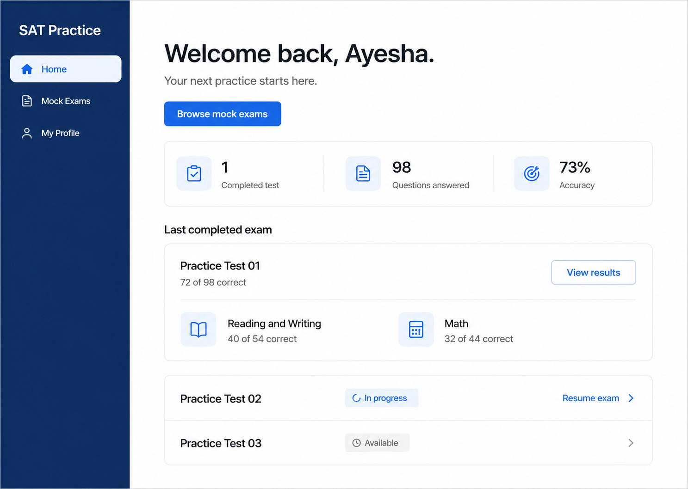
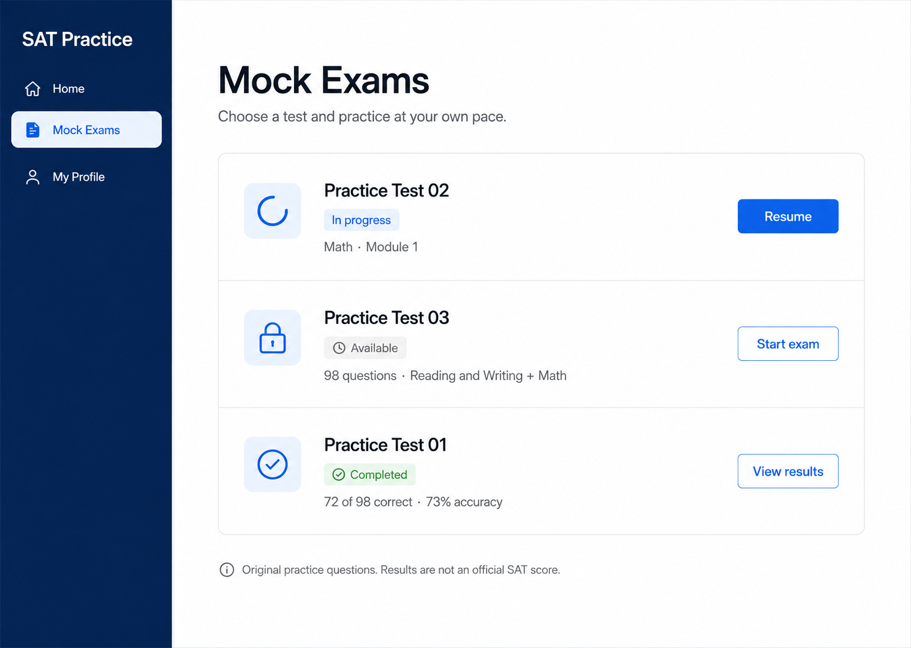
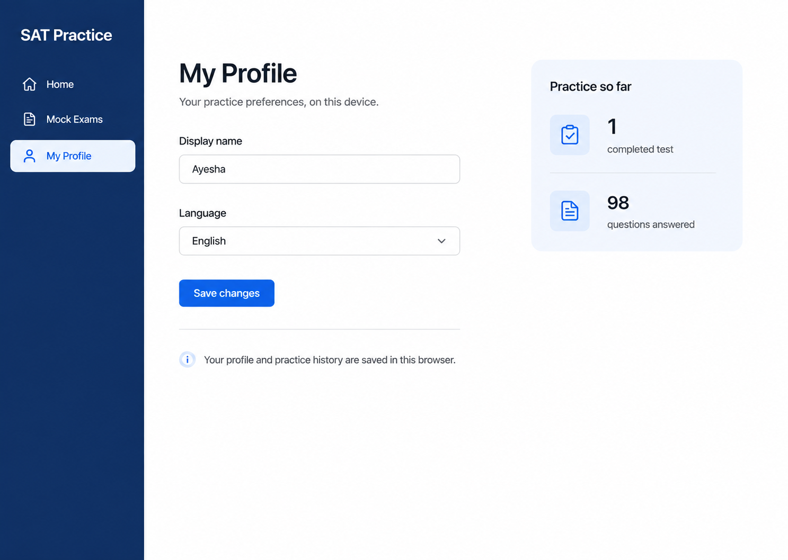
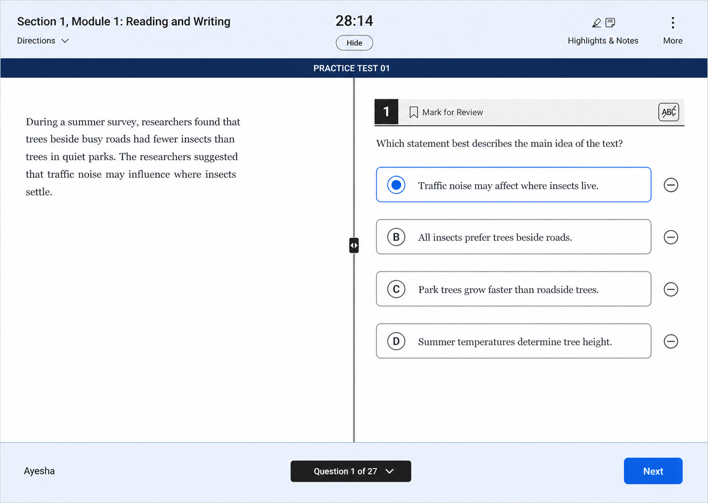
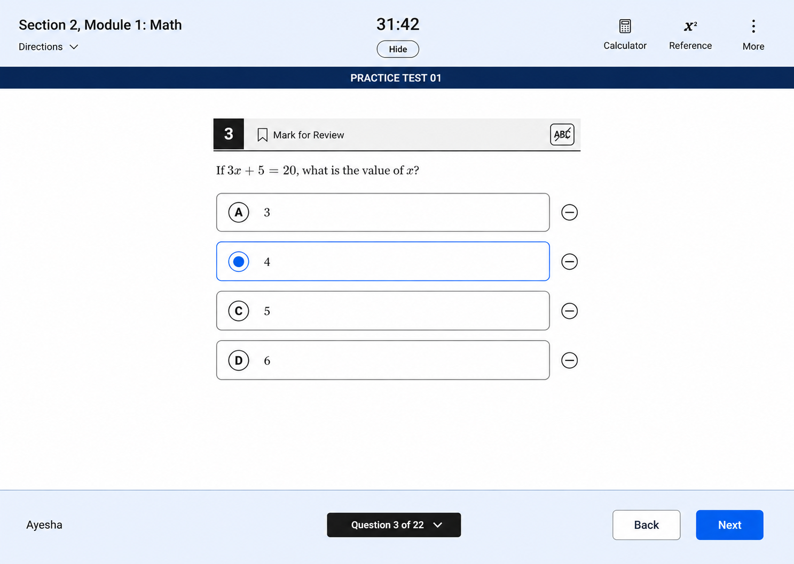
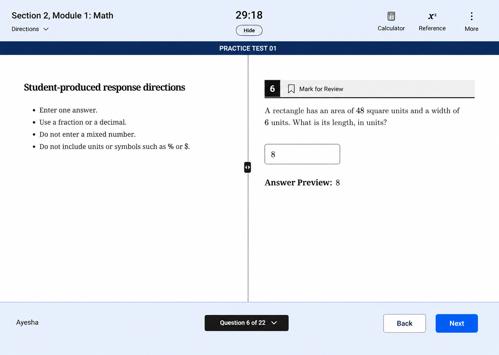
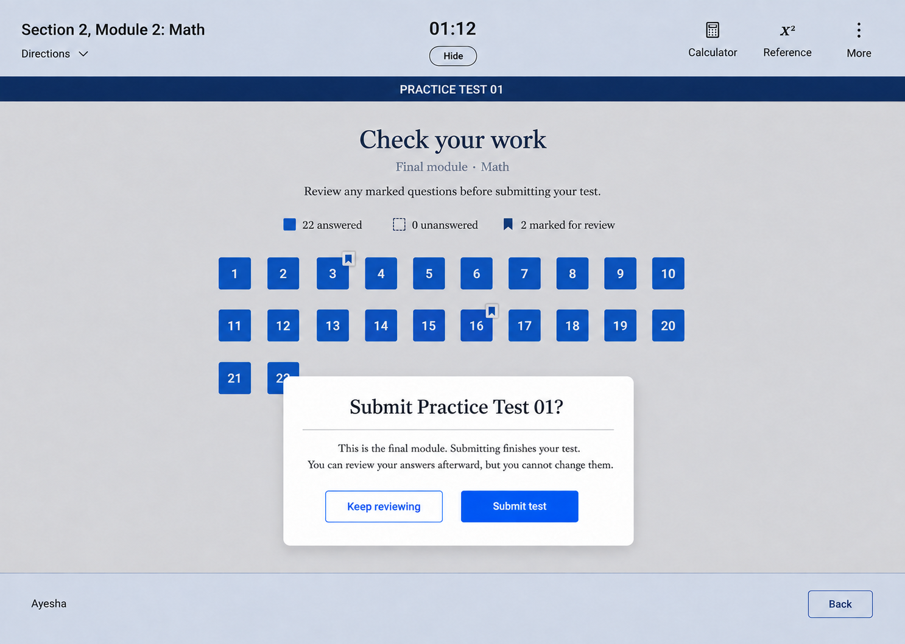
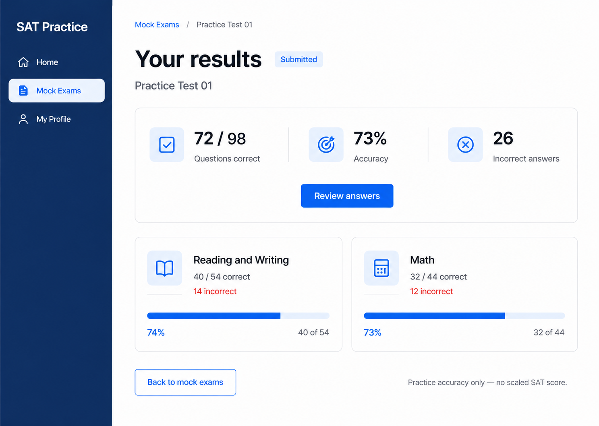
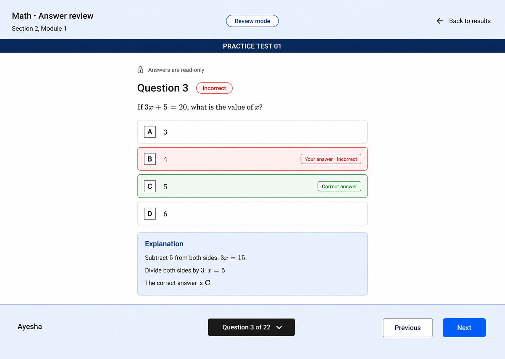
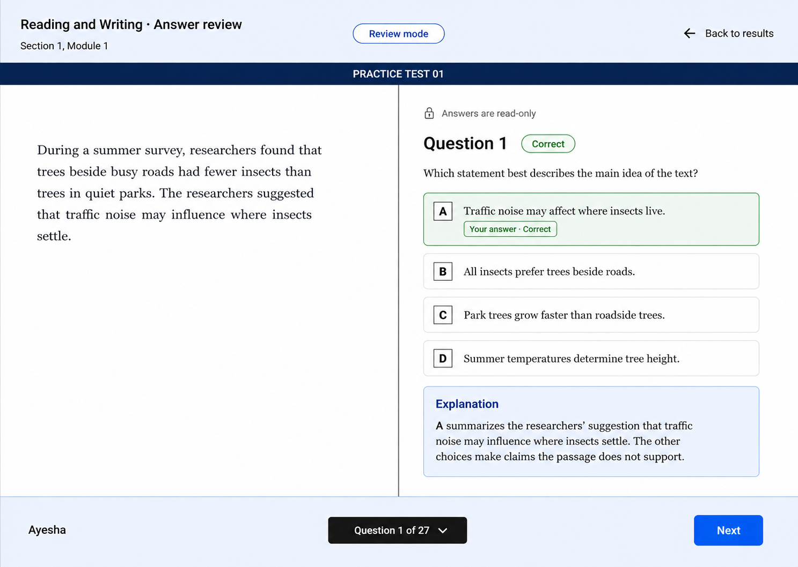

Ten screens covering the student journey from the dashboard to a submitted exam and answer review. These are static design images, not an implemented or interactive application.
Stats, last completed exam, and return to an unfinished test.

Available, in-progress, and completed tests in one catalog.

Local name and language preferences; no sign-in.

Passage left, question right; timer, review flag, elimination, and question navigation.

Centered question layout with calculator/reference controls. Sample selected answer B is intentionally incorrect; no feedback during the test.

Directions left, response field and answer preview right.

Check answered and flagged questions, then confirm final submission.

72 of 98 correct: 40 of 54 Reading and Writing plus 32 of 44 Math. Rounded accuracy, not a scaled SAT score.

Read-only submitted answer, correct answer, explanation, and navigation.

Read-only review preserves the passage beside the answers and explanation.
